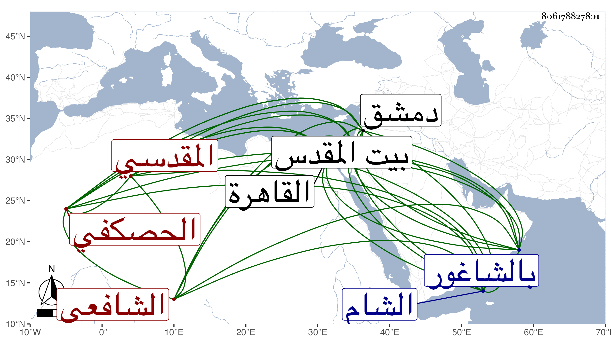

0902Sakhawi.DawLamic.ITO20230111-ara1.EIS1600.806178827801
Biography ID: 806178827801
1078
علي بن محمد بن علي بن منصور العلاء أبو الفضل بن أبي اللطف الحصكفي الأصل المقدسي المولد والدار الشافعي نزيل دمشق والآتي أبوه وكل منهما بكنيته أشهر . ولد في العشر الأول من جمادى الثانية سنة سبع وخمسين وثمانمائة ببيت المشيخة الصلاحية المقدسية ونشأ يتيما فحفظ القرآن عند الفقيه عمر المقدسي الحنبلي الأشعري وصلى به في قبة السلسلة في رمضان سنة خمس وستين على العادة وكذا حفظ الشاطبيتين والألفيتين والمنهاج وجمع الجوامع وعرض على أبي مساعد والكمال بن أبي شريف وغيرهما وقرأ على عبد القادر النووي في المنهاج تصحيحا ثم حلا ولازمه مدة ، وحضر في صغره عند الزين ماهر دروسا متعددة ، وسمع على التقي القلقشندي والجمال بن جماعة والزين عمر بن عبد المؤمن الحلبي ثم المقدسي والشمس بن عمران وتلا عليه إفرادا للسبعة ما عدا نافع وحمزة بل قرأ عليه مقدمة شيخه ابن الجزري من نسخة كتبها له بخطه وقرأ عليه جميع الشاطبية حفظا في ساعة زمن من سنة ثمان وستين وكذا سمع على جماعة ممن قدم عليهم ببيت المقدس كإمام الكاملية ولازم ابن أبي شريف نحو عشر سنين حتى قرأ عليه البخاري غير مرة وجزء أبي الجهم وألفية الحديث بحثا وسمع عليه غير ذلك وأخذ عنه الفقه والأصلين والنحو والمعاني والبيان وارتحل إلى القاهرة غير مرة أولها في سنة ثلاث وسبعين فسمع بها من الشهابين الشاوي والحجازي والناصرين الزفتاوي وابن قرقماس والجلال القمصي والنجم القلقشندي والزكي مسلم والمحب بن الشحنة والولي الأسيوطي وأبو الفضل النويري الخطيب والفخر الديمي وابنة البرهان الشنويهي في آخرين وأخذ في الفقه عند السراج العبادي والفخر المقسي والزين زكريا والجلال البكري وفي أصوله عن المحيوي الكافياجي وقرأ عليه عدة من تصانيفه كالأنوار في التوحيد والتقي والعلاء الحصنيين وعنهما وعن الزين السنتاوي أخذ في النحو وعن الكافياجي والعلاء الحصني في المعاني والبيان وعن ثانيهما في المنطق ، وكذا دخل الشام في سنة أربع وسبعين وأخذ فيها في الفقه عن الزين خطاب والنجم بن قاضي عجلون وقرأ عليه عدة من تصانيفه كرسالته في السنجاب ، واستوطنها من سنة ثمان وسبعين ولازم التقي بن قاضي عجلون في الفقه وأصوله والنحو والتفسير واختص به ولازمه في السفر والحضر وسمع بها من البدر حسن بن نبهان والشهاب أحمد بن الفخر عثمان بن الصلف والعلاء الخليلي إمام جامع الجوزة بالشاغور والعلاء علي بن عراق والسيد العلاء بن السيد عفيف الدين قدمها عليه في سنة تسع وسبعين في آخرين ، وولي ببلده معيدا في الصلاحية تلقاها عن شيخه ابن أبي شريف ، وبدمشق معيدا بالبادرائية والركنية ، وباشر خطابة جامع يلبغا من رمضان سنة ثمانين وأذن له العبادي وابن أبي شريف وزكريا وغيرهم بالإفتاء والتدريس وتميز في الفضيلة وتولع بفن الأدب ونظم الشعر وقيد الوفيات ، ولقيني بالقاهرة غير مرة وأخبرني بترجمته وكتبت عنه قوله :
| قال الرفاق استعدوا | من أجل أهل ومال |
| فقلت من عظم ما بي | يا أكرم الخلق مالي |
وقوله :
| يا من يخاف عداه | إذا المذاهب أعيت |
| بالله ثق وتحصن | وقاية الله أغنت |
